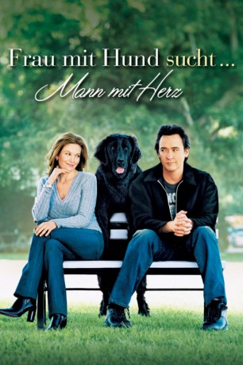

#1489 Frau mit Hund sucht Mann mit Herz
Alternativ: Must Love Dogs
 
 IMDB-Wertung: 5.9 / 10
IMDB-Wertung: 5.9 / 10  Metascore: 46
Metascore: 46 
Romantische Komödie aus dem Jahr 2005. Die 40-jährige Lehrerin Sarah sucht einen Mann an ihrer Seite, doch jegliche Verkupplungsversuche ihrer Schwester Carol scheitern. Eines Tages verabredet sie sich mit Jake Anderson, der mit einem geliehenen Hund zum Date kommt. In der Anzeige war lediglich gefordert, dass man Hunde liebt. Dennoch kommen sich die beiden näher.
Jahr: 2005
Dauer: 98 Minuten
FSK: 0
Land: USA Studio: Warner Bros.Tonspuren: DD2.0 - ,
Untertitel: Englisch,
Auflösung: 720p (1280x528) Größe: 3184 MB
Genre: Komödie, Liebe
Regisseur: Gary David Goldberg
Drehbuch: Claire Cook, Gary David Goldberg
Soundtrack: Craig Armstrong
Darsteller:
Datei: X:\2005(A-F)\Frau mit Hund sucht Mann mit Herz (2005, FSKo.Al., 1280x528).mkv seit 10.07.2015
Festplatte: HD 2003-2004-2005(A-F)
 Es gibt insgesamt 49 Filme in der Gruppe '2005(A-F)'
Es gibt insgesamt 49 Filme in der Gruppe '2005(A-F)'